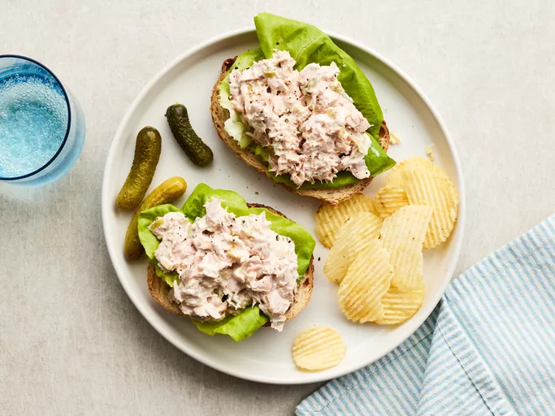

Home
Quick Tuna Salad

Description
This tuna salad comes together in minutes for a delicious
light meal when you are in a hurry. It's easy to make with
canned tuna, creamy salad dressing, and relish.
Serve in a sandwich or with crackers. It tastes great every
time!
Ingredients
- 1 (5 ounce) can solid white tuna packed in water, drained
- 1/4 cup creamy salad dressing
- 1 tablespoon sweet pickle relish, or to taste
Steps
- Gather the ingredients.
- Mash tuna, creamy salad dressing, and relish in a small bowl
with a fork until combined. Serve immediately, or cover
and refrigerate until ready to serve.